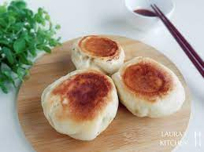

班級:餐三乙 姓名:陳炤富 學號:91034236
料理陳列展示
水煎包
材料：
- 餡料：
- 豬絞肉 300 克
- 高麗菜 200 克（切碎）
- 蔥 2 條（切碎）
- 生薑 1 塊（切末）
- 醬油 2 湯匙
- 鹽巴 1/2 茶匙
- 麵皮：
- 中筋麵粉 500 克
- 溫水 250 毫升
- 食用油 2 湯匙
步驟：
- 將餡料中的豬絞肉、高麗菜、蔥、生薑、醬油和鹽巴混合均勻，製作成餡料。
- 將中筋麵粉慢慢加入溫水中，同時攪拌，直到形成麵糰。
- 將麵糰揉搓至光滑，再加入食用油，繼續揉搓均勻。
- 將麵糰分成小塊，擀成圓形麵皮。
- 在麵皮中央放入適量的餡料，包裹成包子形狀。
- 在平底鍋中加入少量食用油，將包子放入鍋中，加入少量水，蓋上鍋蓋，用中小火煎至底部金黃。
- 翻轉包子，再加入少量水，繼續煎至另一面金黃即可。
- 取出水煎包，享用美味。

典故
水煎包是山東、廣東、香港和澳門地區與臺灣常見的點心，與「生煎包」相似，有一層薄薄的麵粉水做成的薄衣，
餡料有豬肉、干貝等，廣東水煎包加入蝦仁，台灣水煎包加入高麗菜。起鍋時會再灑上一層黑芝麻增添香氣與賣相。
據網路調查，臺灣中南部地區有將辣醬戳進、加入水煎包的吃法。